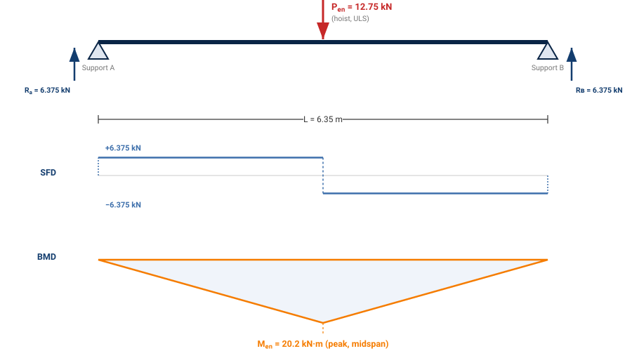
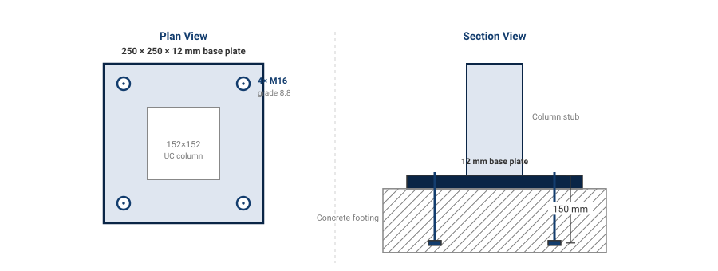

Structural Steel Design | Eurocode 3 | Industrial Application

This project demonstrates a professional structural design process for an industrial steel shed structure (automotive workshop), following Eurocode 3 (EN 1993) and EN 1991-1-1:2002 standards.
The design covers the complete structural system: hoist beam design (254×102×25 UB, 6.35m span), column selection (152×152×23 UC), connection detailing (base plate, anchor bolts, welds), and lateral bracing for wind resistance. The methodology demonstrates load calculation, limit state checks, section selection from steel tables, and transition to fabrication drawings.
This is a practical, standards-based approach to structural engineering — representing the kind of work that happens daily in structural design offices, consulting firms, and fabrication shops across Europe and the UK.
Design a structural steel frame for an automotive workshop shed with a 1-tonne capacity overhead hoist system. The structure must be capable of supporting:
| Load Type | Source | Magnitude | Notes |
|---|---|---|---|
| Roof Cladding (Dead) | Permanent | 0.15 kN/m² | Light metal/composite sheet |
| Floor Live Load | EN 1991-1-1 (Category E) | 5.0 kN/m² | Automotive workshop category |
| Hoist Point Load (Service) | Equipment | 9.81 kN | 1 tonne mass |
| Hoist Design Load (ULS) | Equipment (dynamic) | 12.75 kN | 9.81 × 1.3 dynamic factor |
| Wind Load | EN 1991-1-4 | 0.30 kN/m² | Outdoor exposure, low-rise |
The design follows a structured limit state design approach consistent with Eurocode 3:
Eurocode 3 uses two limit states to ensure safe, economic design:
For a simply-supported beam with central point load:

Free-body diagram (top), shear force diagram (middle), and bending moment diagram (bottom) for the hoist beam under the ULS design load.
The elastic section modulus must satisfy:
For a 254×102×25 UB (from BM Steel tables):
Actual Wel = 60.7 cm³ ✓
Since 60.7 > 56.9 cm³, section is adequate for bending.
At Serviceability Limit State (unfactored loads), deflection must not exceed L/200:
Using E = 210,000 N/mm² (Young's modulus for steel) and the second moment of inertia from section tables, the deflection is checked to be within limits.
Maximum shear force at support:
The plastic shear resistance is calculated from:
For the 254×102×25 UB, shear resistance far exceeds the design shear force. Shear is NOT the controlling limit for this beam.
The column must carry:
Columns are checked for Euler critical load and section buckling following Eurocode 3. The check ensures:
Eurocode 3 uses the "χ method" which applies a reduction factor χ to account for buckling imperfections:
Nc,Rd = χ × A × (fy / γM0)
Where χ depends on relative slenderness λ̄ = √(A·fy/Ncr)

Plan view (left) shows the 4×M16 bolt pattern around the column section; section view (right) shows the 150 mm embedment into the concrete footing.
The base plate connection is designed for:
For this industrial shed, the base is typically pinned (moment-free) — anchor bolts primarily resist shear and uplift, not bending moment. This simplifies both connection design and foundation requirements.
The structure must resist lateral wind loads. Without lateral bracing, the frame would rack (distort) under wind pressure. Bracing members are added to:
Wind pressure on the side of the building creates lateral forces. The bracing system forms a truss that:
Without lateral bracing, a steel frame is unstable and cannot support wind loads or maintain geometry during construction. Bracing is not optional — it's a fundamental requirement of structural design.
Once the structural members are selected and verified, the complete frame is modeled in SolidWorks to create:
From the CAD model, detailed 2D fabrication drawings are extracted showing:
| Drawing Type | Content | Used By |
|---|---|---|
| Beam Elevations | Length, splice locations, hole positions for connections | Fabricator (member cutting & drilling) |
| Column Details | Height, section, base plate attachment, holes | Fabricator & site erection |
| Connection Details | Weld patterns, bolt layouts, sizes, torque specs | Fabricator & certified welders |
| Assembly Drawing | Overall frame geometry, member references, dimensions | Site supervision & QA |
By modeling the complete structure in CAD before fabrication, clashes (e.g., bolt head hitting a nearby member) are identified and resolved at the design stage — far cheaper than discovering them at the fabrication shop or on-site.
Eurocode 3 exists for a reason: it encodes decades of structural behavior research, safety factors, and lessons from failures. A professional engineer doesn't reinvent load factors or safety margins — they apply the standard and document their work for regulators and insurance.
The two-limit-state approach (ULS for strength, SLS for serviceability) ensures:
The process shown here is linear, but in practice, designers iterate: if a section fails a check, the next section up the table is tried. Steel tables exist to speed this — modern FEA can optimize further, but tables still dominate daily practice.
The members (beam, column) account for maybe 50% of engineering effort; the other 50% is connections. Bolts, welds, base plates, and latches must be designed for load transfer, manufacturing tolerances, and assembly in the field. A bad connection can undermine an excellent member selection.
For many structures, gravity loads alone don't control the design — wind or lateral forces demand bracing and lateral-torsional buckling checks. Neglecting lateral stability is a common mistake in preliminary design; including it early saves rework.
Handwritten sketches and pen-and-paper calculations are history. Today:
This structural design project demonstrates the professional methodology and standards-based thinking required for safe, code-compliant steel structures. From load calculation through Eurocode verification to CAD fabrication drawings, the process is systematic, documented, and auditable.
The design of the industrial shed (hoist beam 254×102×25 UB, column 152×152×23 UC, detailed connections, and lateral bracing) exemplifies how structural engineers balance safety, economy, and constructability — delivering safe structures that can be manufactured, erected, and maintained.
Key takeaway: Good structural design is not clever shortcuts or proprietary tricks — it's disciplined application of proven standards, systematic checking, and clear communication through drawings and specifications.
✓ Design Deliverables